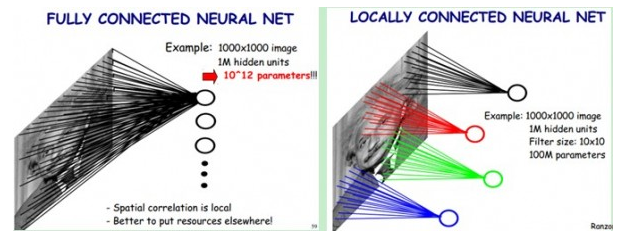

Convolution
卷积
Created by Lily
- 从“信号与系统”开始了解卷积
- 卷积“卷”或“不卷”
- 卷积的物理意义
- 卷积的应用
从信号与系统开始
LTI 线性时不变系统
假设它对脉冲信号 d(t) 的响应是 h(t)
冲击响应是研究黑匣子的重要方法：在输入端給它一个冲击，测量它输出端的响应。
LTI —— 时不变性
如果我们把输入的脉冲信号在时间上平移t， 即 d(t-t)， 系统的新输出也应该相应地平移 t， 即 h(t-t).
LTI —— 线性
线性特性：如果我们再在这个平移后的脉冲信号前面乘上一个系数，即 Ad(t-t)， 输出也应该被乘上相应的系数，即 Ah(t-t).
把一个任意的输入信号 f(t) 近似成无穷个脉冲函数的叠加，即
f(t)=S f(nDt) d(t-nDt) Dt
系统的输出应该是对每个脉冲信号响应的叠加，即
y(t)=S f(nDt) h(t-nDt) Dt
当Dt->0 时，求和便成了积分，系统的输出也就成了脉冲响应和输入信号的卷积：
y(t) = ∫ f(τ) h(t−τ) dτ
什么是卷积？
y(t) = ∫ f(τ) h(t−τ) dτ
源头
卷积的来源是将叠加积分用于线性时不变系统。至少从1903年起，德国数学文献中就有Faltung和convolution这些称呼，其中含有“卷摺”的含义。
为了计算每个时间点的卷积结果，需将h(t)翻转为h(-t)， 再平移为h(t-t)，与f(t)乘积的结果，求面积。
然而，卷积不必“卷”，还有另一种解说：将h(t)平移一个时间量t成为h(t-t)， 乘在t处的函数值f(t)，取遍所有t，将乘积累积起来，就得到卷积的结果。
以两个有限长序列的有限卷积为例：
事实上，不“卷”的计算方法已被用来构造数字化的卷积器。
卷积的物理意义
受迫振动
将强迫力时程分解为一系列的脉冲的叠加，如果已知系统在单个脉冲下的响应， 并注意到 s 时刻的脉冲只对时间 t > s 的响应有影响， 那么整个系统在 t 时刻的响应就等于所有t时刻以前的脉冲各自单独作用下的叠加。
用 h(t) 表示系统在单位脉冲作用下 t 时刻的响应。 那么 t 时刻的脉冲在系统 t (t > t) 时刻产生的影响就等于 h(t-t)， 将所有 t (=0~t) 加起来， 就得到整个系统在 t 时刻的响应。
对于离散时间，就是相加；对于连续时间，变成积分。
小孔成像和实际镜头
光圈越小，图像越清晰，但是能量就太小了。
镜头的不同部分就像一个个的小孔，能把整个外部世界在CCD上成像。
如果把镜头当成一个黑箱，用一个脉冲或亮点去刺激镜头，输出的像就是一个点扩散函数。实际的影像理解为点扩散函数和真实世界的卷积，也就是每一个物点经过成像系统后点扩散函数的累加和。

应用
1. 卷积和概率计算
Q: 一桌人轮流摇骰子，一次摇两个。
如果两个骰子结果数字和Y不是{7,8,9}中的任何一个，此玩家算过，不用喝，到下一个人摇；
但是如果Y=7，该玩家向公杯中随意倒酒，可多可少，并继续摇；
如果Y=8，公杯的酒喝一半，继续摇；
如果Y=9，全喝，继续摇。
显然，游戏的参与者会很关心两个骰子数字（设为X1和X2）和是7，8或9的概率。
或者更进一步，他们关心Y=X1+X2的概率分布（probability mass function）。
首先，考虑Y=7这个事件，其发生的概率等于(X1, X2)=(1, 6), (2, 5), (3, 4), (4, 3), (5, 2), (6, 1)这六个互斥事件发生的概率的和，我们可以得到下面这个式子：
数学上来说，这就是卷积运算。
两个独立的连续随机变量X1和X2，服从分布概率密度为f1(x)和f2(x)的分布，随机变量Y=X1+X2的概率密度为，
对于离散随机变量的分布，上式可以简化成求和的形式:
计算出上述游戏中投两次骰子数字和Y的概率分布：
可以看到，出现Y=7的概率最大，次之的是Y=6和Y=8。如果要让这个游戏更加凶残，不妨改成6，7，8。
2. 卷积和图像处理
在本例中，输入是一些离散点（比如 f={⟨x1,y1⟩,⟨x2,y2⟩}），而响应是一个分布集中在零附近的函数。
二维卷积：
用二元组（向量）代替标量，二维的离散卷积的公式应该是这样：
图像处理中的卷积：对于图像上的一个点，让模板的原点和该点重合，然后模板上的点和图像 上对应的点相乘，然后各点的积相加，就得到了该点的卷积值。
卷积神经网络CNN
CNN是深度学习算法在图像处理领域的一个应用
1.神经网络
神经网络的每个单元如下：
其对应的公式如下：
下图展示了一个具有一个隐含层的神经网络：
其对应的公式如下：
2.卷积神经网络
在图像处理中，往往把图像表示为像素的向量， 比如一个1000×1000的图像，可以表示为一个1000000的向量。 在上一节中提到的神经网络中，如果隐含层数目与输入层一样，即也是1000000时， 那么输入层到隐含层的参数数据为1000000×1000000=10^12，这样就太多了，基本没法训练。 所以图像处理要想练成神经网络大法，必先减少参数加快速度。
2.1 局部感知
一般认为人对外界的认知是从局部到全局的， 而图像的空间联系也是局部的像素联系较为紧密， 而距离较远的像素相关性则较弱。 因而，每个神经元其实没有必要对全局图像进行感知， 只需要对局部进行感知，然后在更高层将局部的信息综合起来就得到了全局的信息。
网络部分连通的思想，也是受启发于生物学里面的视觉系统结构。 视觉皮层的神经元就是局部接受信息的（即这些神经元只响应某些特定区域的刺激）。
如下图所示：左图为全连接，右图为局部连接。
在上右图中，假如每个神经元只和10×10个像素值相连， 那么权值数据为1000000×100个参数，减少为原来的千分之一。 而那10×10个像素值对应的10×10个参数，其实就相当于卷积操作。
2.2 参数共享
如果这1000000个神经元的100个参数都是相等的，那么参数数目就变为100了。
我们可以这100个参数（也就是卷积操作）看成是提取特征的方式， 该方式与位置无关。这其中隐含的原理则是：图像的一部分的统计特性与其他部分是一样的。
如下图所示，展示了一个3x3的卷积核在5x5的图像上做卷积的过程。每个卷积都是一种特征提取方式，就像一个筛子，将图像中符合条件（激活值越大越符合条件）的部分筛选出来。

2.3 多卷积核
我们可以添加多个卷积核，比如32个卷积核，可以学习32种特征。在有多个卷积核时，如下图所示：
不同颜色表明不同的卷积核。每个卷积核都会将图像生成为另一幅图像。 比如两个卷积核就可以将生成两幅图像，这两幅图像可以看做是一张图像的不同的通道。
在上图由4个通道卷积得到2个通道的过程中，参数的数目为4×2×2×2个，其中4表示4个通道，第一个2表示生成2个通道，最后的2×2表示卷积核大小。
2.4 Down-pooling - 池化
在通过卷积获得了特征 (features) 之后，下一步我们希望利用这些特征去做分类。
假设我们已经学习得到了400个定义在8X8输入上的特征， 每一个特征和图像卷积都会得到一个 (96 − 8 + 1) × (96 − 8 + 1) = 7921 维的卷积特征，由于有 400 个特征，所以每个样例 (example) 都会得到一个 892 × 400 = 3,168,400 维的卷积特征向量。
为了描述大的图像，一个很自然的想法就是对不同位置的特征进行聚合统计， 例如，人们可以计算图像一个区域上的某个特定特征的平均值 (或最大值)。 这些概要统计特征不仅具有低得多的维度 (相比使用所有提取得到的特征)。 这种聚合的操作就叫做池化 (pooling)，有时也称为平均池化或者最大池化 (取决于计算池化的方法)。
2.5 多层卷积
在实际应用中，往往使用多层卷积，然后再使用全连接层进行训练， 多层卷积的目的是一层卷积学到的特征往往是局部的，层数越高，学到的特征就越全局化。